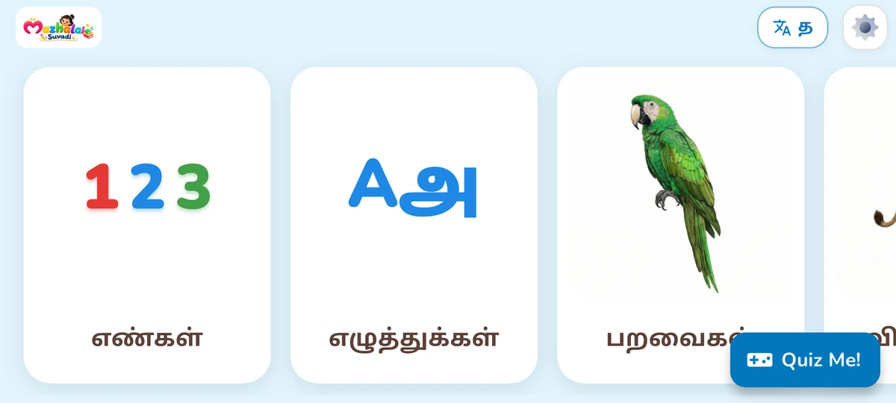
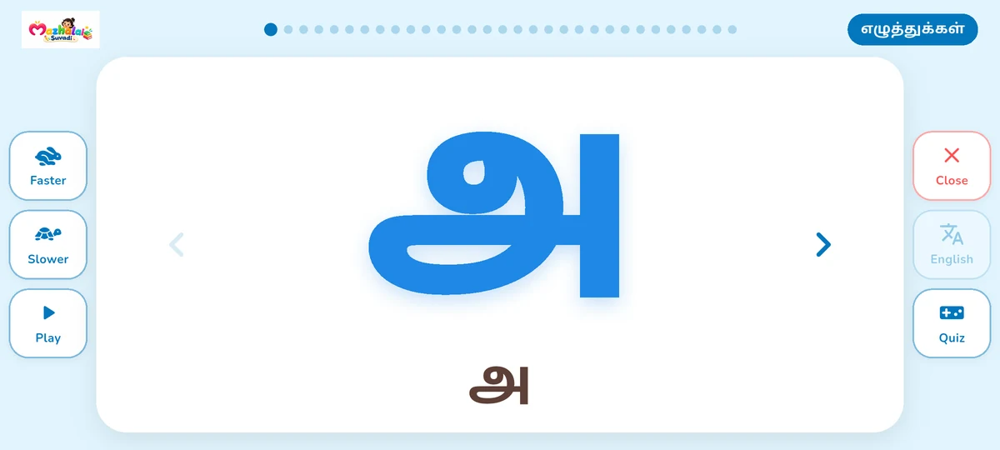
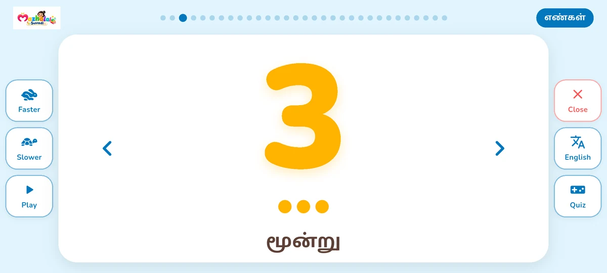
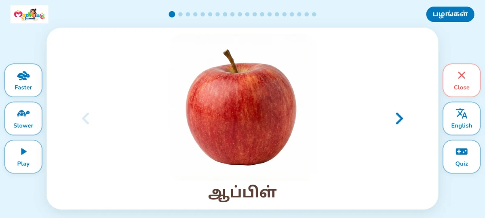
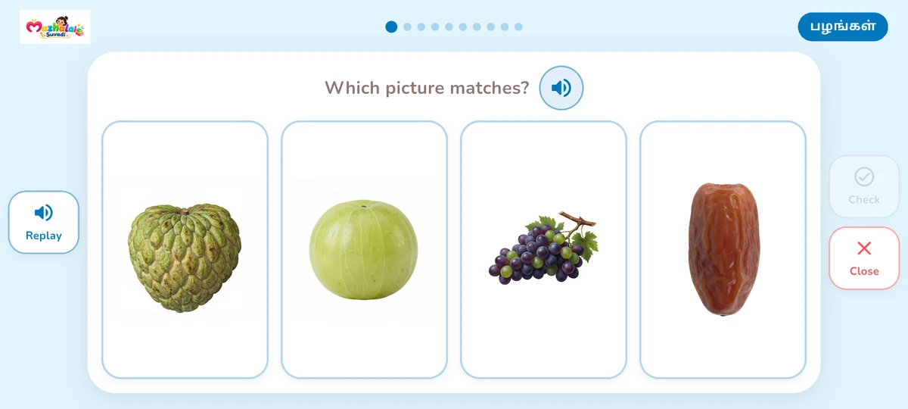

மழலைகளுக்கும் பெற்றோருக்கும்
சின்னச் சின்ன சொற்கள்.
புதிய கண்டுபிடிப்புகள்.
தமிழையும் ஆங்கிலத்தையும் மகிழ்ச்சியுடன் அறிந்துகொள்ள ஒரு தொடக்கம். மழலை சுவடி (சுருக்கமாக சுவடி) படங்களைப் பார்த்து, சொற்களைக் கேட்டு, புதிய விஷயங்களைக் கற்க உதவுகிறது.
Android · 2–6 வயது மழலைகளுக்கான கற்றல்


அ · A பார்க்கலாம். கேட்கலாம். கற்கலாம்.ஒவ்வொரு நாளும் புதிய கண்டுபிடிப்புகள்
ஒரு படம். ஒரு சொல்.
கற்றலின் மகிழ்ச்சி.
ஆர்வத்துடன் அறிந்துகொள்ள எளிய படவழிக் கற்றல். குழந்தையுடன் அமர்ந்து பிடித்த சொற்களை மீண்டும் கேட்கலாம்; அவர்களின் வேகத்தில் கற்க உதவலாம்.
பார்க்கலாம். கேட்கலாம். சொல்லலாம்.
வண்ணப் படங்களைப் பார்த்து, சொற்களின் ஒலிப்புகளைக் கேட்கலாம். மீண்டும் கேட்க படத்தைத் தொடலாம். அடுத்த படத்திற்குச் செல்லலாம் அல்லது தானியங்கி இயக்கத்தைப் பயன்படுத்தலாம்.
அ முதல் A வரை.
தமிழ், ஆங்கிலம் ஆகிய மொழிகளுக்கு இடையே மாறலாம். எடுத்துக்காட்டுச் சொற்களுடன் எழுத்துகள், எண்கள், வடிவங்கள், வண்ணங்கள் ஆகியவற்றை அறிந்துகொள்ளலாம்.
வினாடி வினாவுடன் பயிற்சி.
படங்களை அடையாளம் காணும் கேள்விகளுக்கும், ஒலியைக் கேட்டு விடையைத் தேர்ந்தெடுக்கும் கேள்விகளுக்கும் பதிலளிக்கலாம். சாதனத்தில் உள்ள கற்றல் உள்ளடக்கத்திலிருந்து வினாடி வினாக்கள் அமைக்கப்படுகின்றன.
செயலியின் உள்ளே
முதல் சொற்கள், இரு மொழிகளில்.
பெரிய படங்கள், தெளிவான ஒலிப்புகள், எளிய கிடைமட்டத் திரைகள் - குழந்தைகள் தங்கள் வேகத்தில் அறிந்துகொள்ளலாம்.




கற்றலின் முதல் படிகள்
18 தலைப்புகள். பல புதிய விஷயங்கள்.
எழுத்துகள், எண்களில் தொடங்கலாம். சுற்றியுள்ள பொருட்களையும் புதிய உலகங்களையும் அறிந்துகொள்ளலாம்.
- எழுத்துகள்
- எண்கள்
- வடிவங்கள்
- வண்ணங்கள்
- விலங்குகள்
- பறவைகள்
- பழங்கள்
- காய்கறிகள்
- பூக்கள்
- வாகனங்கள்
- உடல் உறுப்புகள்
- அன்றாடப் பொருட்கள்
- தொழில்கள்
- பள்ளிப் பொருட்கள்
- நாட்கள்
- மாதங்கள்
- பருவங்கள்
- சூரியக் குடும்பம்
பெற்றோருக்காக
மழலைகளுக்கான கற்றல்.
பெற்றோருக்கான அமைப்புகள்.
- மொழியைத் தேர்ந்தெடுக்கலாம்.தமிழிலோ ஆங்கிலத்திலோ கற்கலாம். மற்ற மொழியை அறிந்துகொள்ள விரும்பும்போது மாற்றலாம்.
- ஒரு தலைப்பைத் தேர்ந்தெடுத்து சேர்ந்து கற்கலாம்.படத்தைப் பார்த்து அதன் பெயரைக் கேட்கலாம். குழந்தைக்குப் பிடித்த சொற்களை மீண்டும் கேட்கலாம்.
- விருப்பத்திற்கு ஏற்ப அமைக்கலாம்.பெற்றோர் பகுதியைத் திறக்க ஒரு கணக்குக் கேள்விக்குப் பதிலளிக்க வேண்டும். மொழி, திரையின் வண்ணம், ஒலி, பதிவிறக்கிய தலைப்புகளை இங்கு நிர்வகிக்கலாம்.
தெரிந்துகொள்ளலாம்
பெற்றோரின் கேள்விகள்.
சுவடி யாருக்கானது?
2–6 வயது மழலைகளுக்காக சுவடி வடிவமைக்கப்பட்டுள்ளது. பெற்றோரும் உடன் அமர்ந்து சொற்களை மீண்டும் கேட்டு, அன்றாடக் கற்றலில் பங்கேற்கலாம்.
தமிழையும் ஆங்கிலத்தையும் கற்கலாமா?
ஆம். படங்கள், சொற்களின் ஒலிப்புகள், எழுத்துகள் ஆகியவற்றைத் தமிழிலும் ஆங்கிலத்திலும் அறிந்துகொள்ளலாம். செயலியில் மொழியை மாற்றலாம்.
கற்க இணைய இணைப்பு தேவையா?
கூடுதல் தலைப்புகளின் படங்களையும் ஒலிகளையும் பதிவிறக்க இணைய இணைப்பு தேவை. பதிவிறக்கிய பின் அந்த உள்ளடக்கத்தை இணையமின்றிப் பயன்படுத்தலாம்.
பெற்றோருக்கான அமைப்புகள் எங்கே உள்ளன?
பெற்றோர் பகுதியைத் திறந்து கணக்குக் கேள்விக்குப் பதிலளிக்கலாம். மொழி, திரையின் வண்ணம், ஒலி, பதிவிறக்கிய தலைப்புகளை அங்கு நிர்வகிக்கலாம்.
ஒரு புதிய கண்டுபிடிப்பிற்கு இடம் கொடுங்கள்.
முதல் எழுத்து. பழக்கமான விலங்கு. சேர்ந்து சொல்ல ஒரு சொல்.